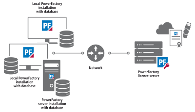
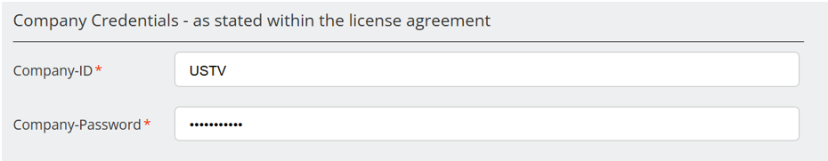
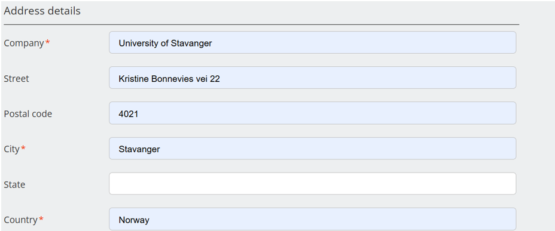
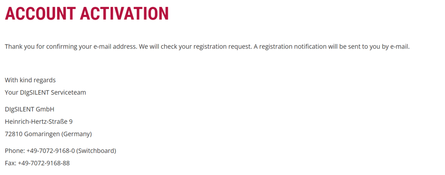
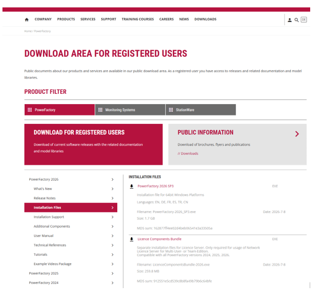
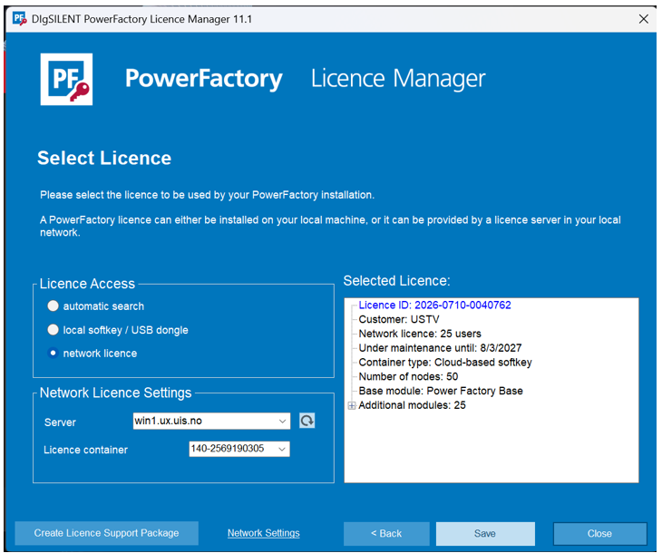

Om Power Factory#
En PowerFactory-modell er vanligvis ikke en fullstendig digital tvilling av kraftsystemet, men en høyfidelitets simuleringsmodell som kan utvikles mot en digital tvilling gjennom integrasjon av sanntidsdata, automasjon og kontinuerlig modelloppdatering.
Med andre ord: PowerFactory er først og fremst en simuleringsplattform, men den kan være kjernen i en digital tvilling dersom modellintegriteten, dataintegrasjonen og oppdateringsfrekvensen er høy nok. Det er graden av kobling til den virkelige verden som avgjør hvor langt man er på skalaen fra “simuleringsmodell” til “ekte digital tvilling”
Vår lisens#
Vi har flerbrukerutgave (Multi-User Edition). Denne utgaven er for organisasjoner som trenger å administrere flere brukerlisenser. En lisensserver (som leveres sammen med PowerFactory-programvaren) sørger for tildeling og administrasjon av lisensene. De enkelte brukerne får tilgang til lisensene via det lokale nettverket. Antallet samtidige brukere er begrenset av antallet lisenser som er kjøpt.
Det finnes også en valgfri modul for flytende lisenser (floating licences). Denne gjør det mulig for en bruker å benytte PowerFactory uten å være koblet til lisensserveren.
Database: Lokal (SQLite)

Lisenstype#
Akademisk lisens:
Education Licence (PF4E)#
Dette er en lisens for universitet til bruk i utdanning. Lisensen gjelder for 25 brukere. Kommersiell bruk er ikke tillatt.
Funksjoner: Forhåndsdefinerte pakker og grunnleggende funksjoner i tillegg til følgende avanserte funksjoner:#
Contingency Analysis, Quasi-Dynamic Simulation, Network Reduction, Protection Functions (Time-Overcurrent & Distance), Arc-Flash Analysis, Cable Analysis, Power Quality and Harmonic Analysis, Connection Request Assessment, Transmission Network Tools, Distribution Network Tools, Probabilistic Analysis, Reliability Analysis Functions, OPF (Reactive Power Optimisation & Economic Dispatch), Unit Commitment and Dispatch Optimisation Economic Analysis Tools, State Estimation (SE), Stability Analysis Functions (RMS), Electromagnetic Transients (EMT), Motor Starting Functions, Small Signal Stability Analysis, System Parameter Identification and Sripting and Automation
Antall noder: 50
Licensteknologi: Softkey, USB Dongle or Cloud-based Softkey
Begrenset støtte og software oppdatering
Installasjonsveiledning for PowerFactory#
Før du starter#
Du trenger følgende:
En registrert konto på DIgSILENTs nettsted (se trinn 1)
IP-adressen eller vertsnavnet til den interne lisensserveren:
win1.ux.uis.noNettverkstilgang til denne serveren (på campus eller via VPN dersom du arbeider eksternt)
Administratorrettigheter på PC-en for å installere programvaren
1. Registrer bruker#
Gå til DIgSILENT PowerFactorys registreringsside:
Opprett en konto ved å bruke universitetet/student e-postadresse.
Bruk følgende bedriftsinformasjon ved registreringen:
Company ID:
USTVCompany Password: Som publisert på ELK330-siden i Canvas

Ved registrering av brukerkonto må du passe på at du bruker din UiS-e-postadresse.
I adressefeltet kan du oppgi universitetets adresse som vist nedenfor:
Universitetet i Stavanger (UiS)
Kitty Kiellands hus
Rennebergstien 30
4021 Stavanger
Norge

Etter at du har fullført registreringen, vil du motta en bekreftelse som ligner på eksemplet nedenfor.

MERK: Bekreftelse på brukerregistrering fra PowerFactory kan ta opptil 24 timer. Du kan gjerne prøve å logge inn etter noen timer uten å vente på en egen bekreftelses-e-post. Når registreringen er godkjent og du kan logge inn på kontoen din, får du tilgang til nedlastingsområdene.
2. Last ned PowerFactory#
Last ned PowerFactory Installation Package fra nedlastingsområdet for registrerte brukere.
Bruk innloggingsinformasjonen som registrert bruker (se punkt 1 i forrige avsnitt).

3. Installasjon#
Installer PowerFactory ved hjelp av installasjonsprogrammet på alle klientmaskiner som skal bruke programvaren.
4. Lisenskonfigurasjon#
Når installasjonsprogrammet er ferdig, vil en konfigurasjonsveiviser starte automatisk.
Følg disse stegene:
Klikk på «Select License».
I området «License Access» velger du alternativet «Network License».
Skriv inn servernavnet:
win1.ux.uis.no
Klikk på «Refresh» for å oppdatere listen over tilgjengelige lisenscontainere.
Velg lisenscontaineren som vises i listen.
Når lisensinformasjonen er hentet og vises i området «Selected License», klikker du «Save».
Merk: Administratorrettigheter kreves for å konfigurere lisensen. Under installasjon og lisensoppsett må PC-en være koblet til UiS-nettverket, enten direkte på campus eller via VPN.
Lukk vinduet og start PowerFactory.
PowerFactory skal nå være klart til bruk.
